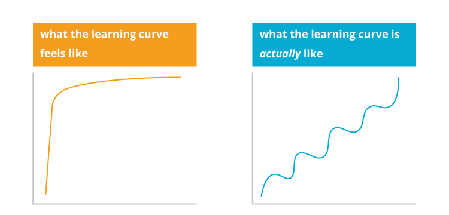

You just got hired in your first role as a product manager. It’s up to you to prioritize features, coordinate with developers, and ship elegant user experiences. To make this happen, you’ve been handed a slate of apps and tools, a stellar team, and a lot of freedom to accomplish your objectives. Only problem: you’ve never written a line of code, and you don’t speak technical jargon. So you’re feeling just a little confused and/or freaked out.
This is a common predicament for PMs making the transition from non-technical roles. Product management is, by definition, such a cross-functional field—touching on engineering, sales, business, marketing, customer success, psychotherapy, basket weaving—that newbies from any background inevitably bring transferable skills. But they also face an inevitable learning curve. And that curve can be especially steep when your background isn’t in engineering.

Suzie Prince, Head of Product for ThoughtWorks Studios, successfully scaled her own learning curve. After completing a master’s degree in botany and taxonomy, she joined ThoughtWorks in a business analyst role before venturing into product. She now works on a software tool for software developers—i.e. a technical product for a super-technical user base. Prince says she could never have predicted her career trajectory. Which means she’s in a prime position to share insights for early-stage PMs still wrapping their heads around the role. Here are her top tips.
Learn the language
You don’t need to code to be a product manager. But you do need to know how to collaborate with people who do. A good baseline: understanding what everyone is talking about. Product managers are like translators. Each department has its own “language,” whether it’s engineering, sales, marketing or customer success. PMs must interpret information from each department and translate it to others in a language they can understand (roadmaps are essentially helpful here *hint, hint*).
You need to be able to understand how your development teams are working, their practice. Because you need to be kind of at one with them. –Suzie Prince
Prince learned the technical language in the same way exchange students pick up Italian: through immersion. Although she took a basic training course through her job, she says her most valuable learning has been through osmosis. “As much as possible, I try to sit very closely to the development team,” Prince says, “and I try to pair with them on tasks if I can.” And developers aren’t the only resources for immersive learning. Prince also recommends spending time with the support team, who often possess in-depth knowledge about the product. The goal isn’t to learn how to do something—it’s to learn how to talk about that thing. “Basically understand what they’re doing and why they’re doing it, but maybe not the nitty gritty.”
Openness = Trust
When things get confusing, it’s tempting to just nod along. But Prince advises against the fake-it-til-you-make-it approach. “Don’t be afraid if you don’t have a technical background,” she advises, “Everybody’s gonna know straight away, anyway. So I think be honest, be open, and ask questions.”
Honesty, openness and curiosity are essential qualities for building trust. And trust is imperative to strong, productive relationships with your engineering team. Rather than trying to hide the gaps in your knowledge base, ask colleagues to fill you in. Prince says she likes to reiterate the problem—“This is the picture I have in my head. Is this what you were saying?”—or set aside time for one-on-one learning. “What I’ve found sometimes with technical team members is in the moment they can be pretty full-on or boisterous,” she says, “But afterward I’ll be humble and say, ‘Hey, you seem super knowledgeable about this whole part of the system. I don’t really understand that. Can we get coffee? Can you draw on the whiteboard for me?’”
Hone some technical “essentials”
Again, you don’t need to code to be a product manager. But it can be helpful to pick up a few processes that will allow you to better understand both your product and your users. Don’t try to learn a whole new field just for the sake of it—focus on skills that are directly applicable to your day-to-day as a product manager. “You can learn to run some simple queries in your database, or use a logging tool. If you can learn to access that data, it’s super useful. Especially coming from the creative side, people can be nervous about doing that. But I would say the power is well worth learning.”
Think of yourself as an MVPM: Minimum Viable Product Manager. You don’t need bells and whistles in your technical skill set. You just need to identify a few key technical processes that will help you ace your job.
Don’t wait to be 101%
With confusion comes intimidation—which can significantly stall your progression. So think like an MVPM. In Prince’s words: “Don’t wait to be asked to do something. If you feel like you can take on that technical demo, or you can write that help doc, or you can explain to your customer how the system works, don’t wait to be 101% confident of it. Most of my experiences have been that you worry a lot, but if you’re spending a full day with a product, and all day with a technical team, at some point you are going to know more than other people. It’s okay to just try.”
If you wait to have “perfect” technical knowledge to dive into your role, you’ll never actually launch.
Take advantage of not knowing
Regardless of your background, you bring something unique to your role as a PM. But Prince also notes that there’s an advantage to not knowing the technical side: it could make you more inquisitive. “I’ve actually found that I make less assumptions about what our users want. And less assumptions about what they’re going to expect. So the ‘tell me more’ is a genuine ‘tell me more,’ because I want them to tell me.”
Want to influence how our #dev tools are created? Get in touch & help me with some research.
— Suzie Prince (@pm_suzie) March 24, 2016
It’s well-known that empathy is a crucial skill for product managers. The less you know, the less likely you are to jump to conclusions. This opens the door to empathy: it’s a chance to put yourself in others’ shoes, hear their perspectives, and ask a lot of questions without injecting your own opinion. Your window of “not knowing” will only last so long. Use it.
How else can “non-technical” product managers scale the learning curve? Tweet to us!